En este paso crearemos una nueva aplicación Mule en Anypoint Studio a partir de la definición RAML de la API de Omni Channel. Esta será la implementación de nuestra API REST.
- Inicie Anypoint Studio desde el icono del escritorio.

- Cuando abra Studio por primera vez, se le pedirá el espacio de trabajo donde se guardarán los proyectos. Seleccione el que viene por defecto.
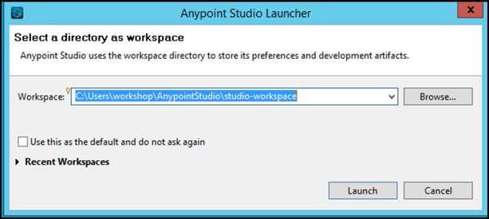 - Se le presenta la pantalla de bienvenida de Anypoint Studio 7.
- Desplácese hasta la parte inferior si desea obtener más información sobre Studio. Después de eso, presione Continue to Studio.
- En Workspace Launcher, utilice la ubicación del directorio del espacio de trabajo predeterminado.
- En el menú de Anypoint Studio, seleccione File> New> Mule Project para crear un proyecto nuevo. Aparecerá una ventana para definir los detalles de esta nueva aplicación.
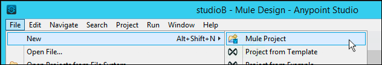 - Asigne al proyecto el nombre
omni-channel-api-v1 - Seleccione el Mule Server 4.4.0 EE.
- En Import a published API , vamos a importar la especificación RAML de Exchange. Haga clic en y seleccione from Exchange
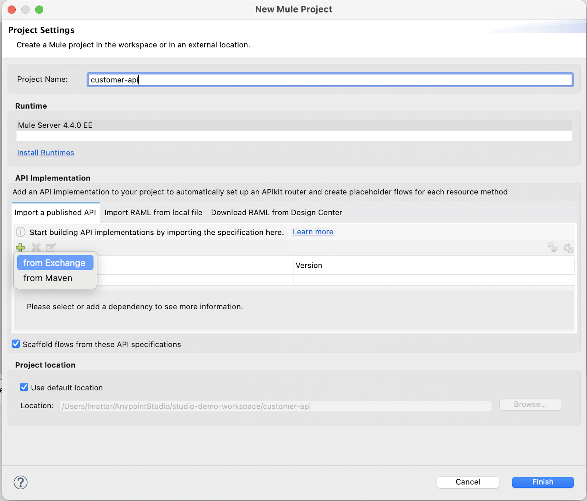
- . Verá una lista con todas las API. Seleccione Customer API y presione Add.
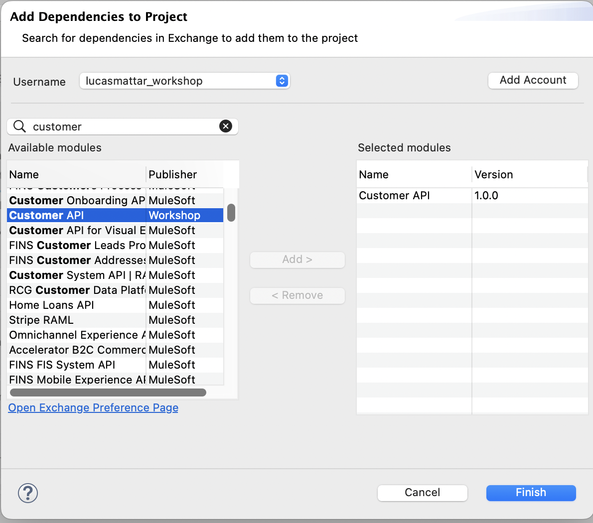 - Presione Finish.
- Comprueba que todo esté bien. Asegúrese de que el Scaffold flows from these API specifications esté marcado. Presione Finish.
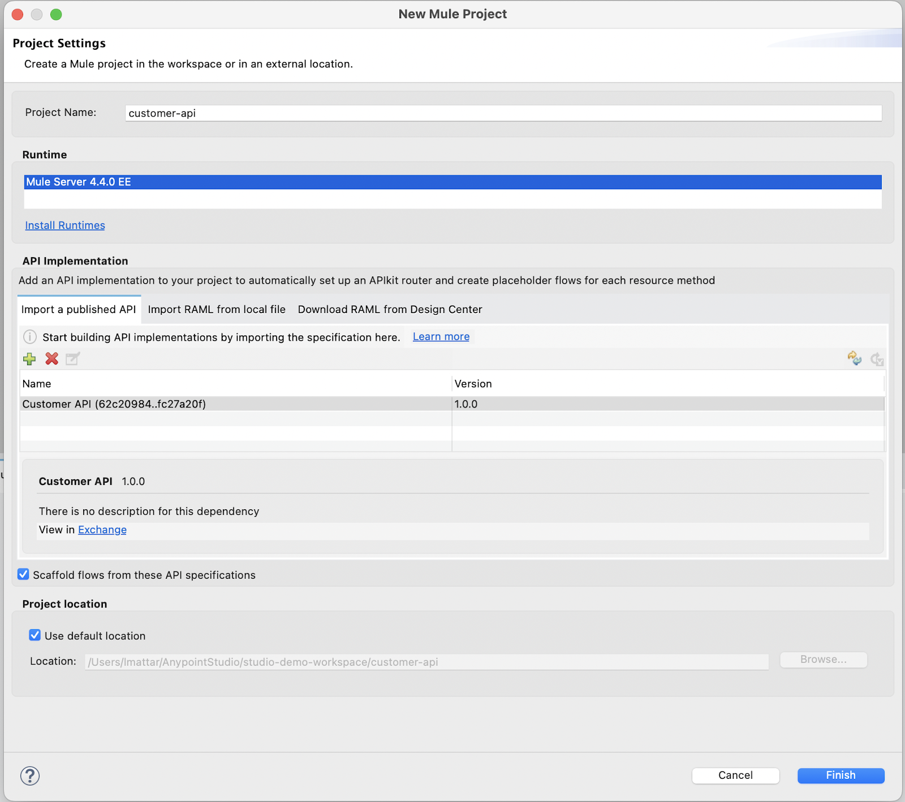 - APIkit crea su nuevo proyecto de Anypoint Studio con una implementación generada según la especificación de su API. La configuración generada implementa el HTTP Listener entrante, así como todos los recursos, metadatos del tipo de datos de solicitud / respuesta, entre otras cosas.
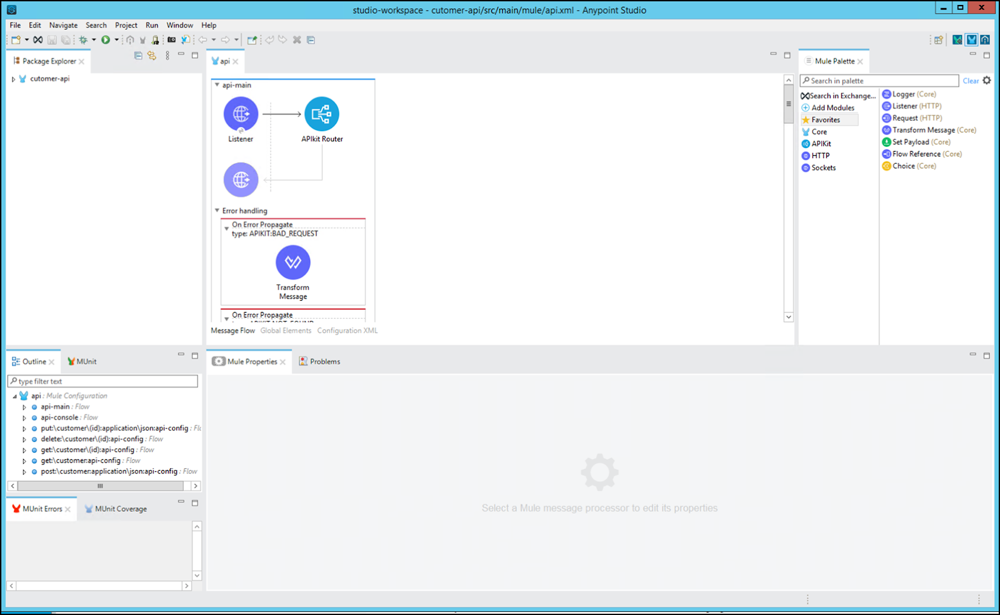
- Para probar la API, ejecutemos dentro de Studio. Haga clic con el botón derecho en la aplicación en Package Explorer.
- Seleccione Run As> Mule Application
- Cada vez que iniciamos la aplicación, debemos asegurarnos de que se inicie correctamente. Compruebe en la pestaña Console que el proyecto aparece como "DEPLOYED".
- Una vez implementada la aplicación, Anypoint Studio abrirá una pestaña con las Consolas APIkit donde podemos probar la aplicación (para acceder a la consola, simplemente haga clic en el enlace para abrir la del Customer API Console en un navegador).
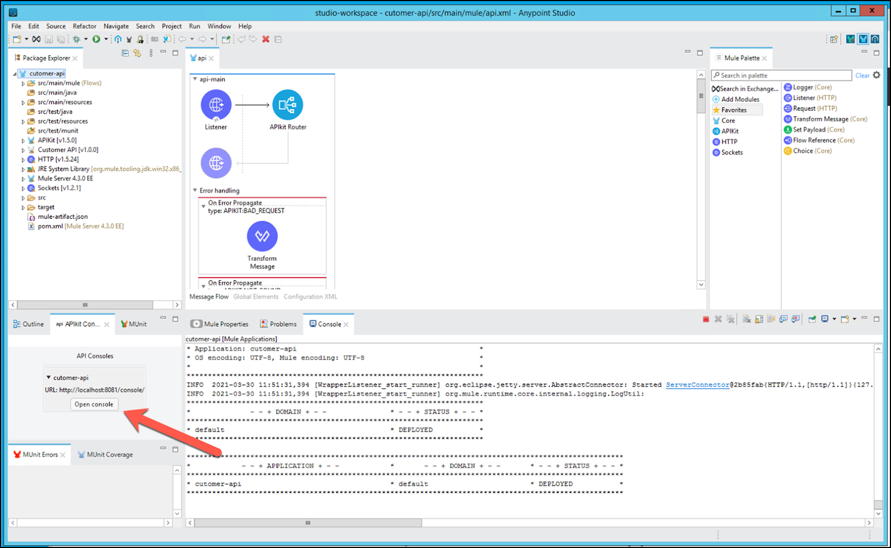
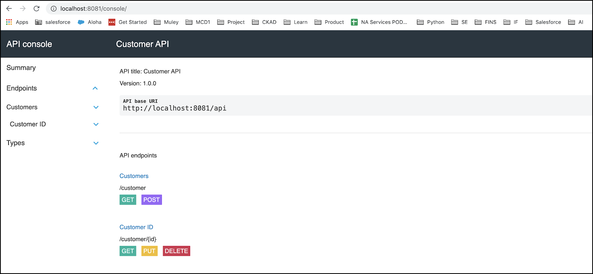 - Haga clic en la pestaña POST y pruebe la creación del cliente.
- En el campo Aceptar, complete con
application/json - Presione el botón Send.
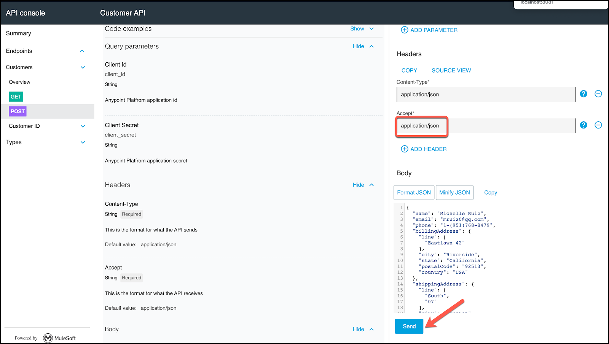 - Desplácese hacia abajo en el tercer panel y verá la respuesta de muestra definida en la especificación de la API.
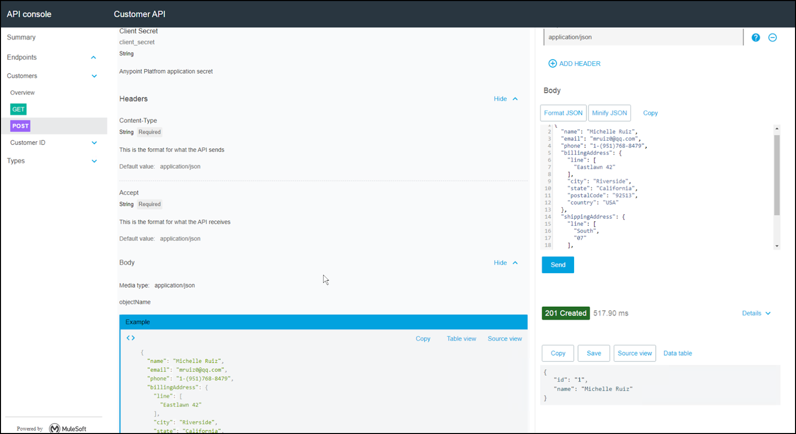 - Vaya a la pestaña de la consola y presione el botón rojo para detener el servidor de tiempo de ejecución de Mule.

Los pasos que deben ejecutarse son:
- Con la api, haga clic en Add moduel
 inicie sesión en la Mule Palette para agregar el módulo de Validación y Conector de Salesforce requerido para nuestra implementación en el siguiente paso.
inicie sesión en la Mule Palette para agregar el módulo de Validación y Conector de Salesforce requerido para nuestra implementación en el siguiente paso.
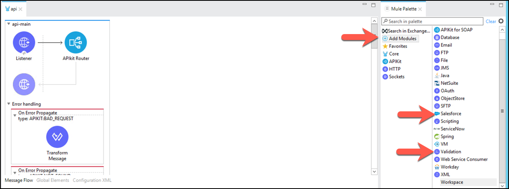 - Arrastrar y soltar el conector de Salesforce.
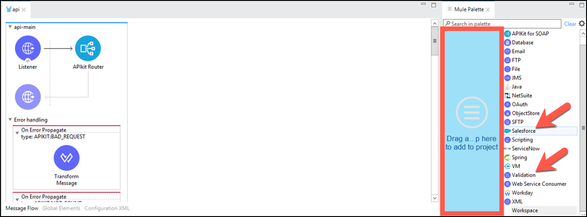 - Al final, la paleta debe verse similar a la siguiente imagen.
- Ahora, está listo para implementar la operación GET de recursos. Encuentra el flujo get:\customer:application\json:api-config (en la parte inferior de la API)
- De la Mule Palette, seleccione Salesforce Query y arrastre y suelte el componente sobre el flujo, antes del Componente de Transform Message
- Haga clic en el icono Salesforce la configuración se mostrará a continuación.
- Cambiar su nombre a
Consultar cuenta - Haga clic en el
 Guardar todo Botón.
Guardar todo Botón.
- Ahora que tiene sus propiedades definidas, configuremos una nueva configuración de conector. Vuelva a la Message Flow donde soltó anteriormente el conector de Salesforce y selecciónelo.
- Haga clic en el botón en la Configuración del conector.
- Para la configuración del conector vamos a poner las siguientes propiedades:
- Username: demos+mythical_lab@mulesoft.com
- Password:
***** - SecurityToken:
***************
- Pulse Test Connection... para comprobar que todo está en su lugar.
- Presione OK (2 veces).
- Haga clic en el Botón Guardar todo.
Configuremos el conector de Salesforce para consultar una cuenta. Continuamos en el Panel de Salesforce.
- Dentro del panel de conectores de Salesforce, copie y pegue la consulta en Salesforce Query
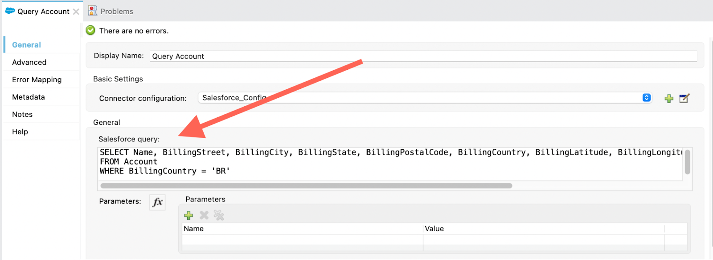
Este es el código de mapeo que refleja la imagen. Puede copiarlo y pegarlo en
SELECT Name, BillingStreet, BillingCity, BillingState, BillingPostalCode, BillingCountry, BillingLatitude, BillingLongitude, BillingGeocodeAccuracy, Phone, AccountNumber
FROM Account
WHERE BillingCountry = 'BR' - Haga clic en Transform Message y verá una transformación de Dataweave. en los paneles de entrada y salida. Puede arrastrar y soltar cada campo de la solicitud (objeto de Salesforce) a la salida.
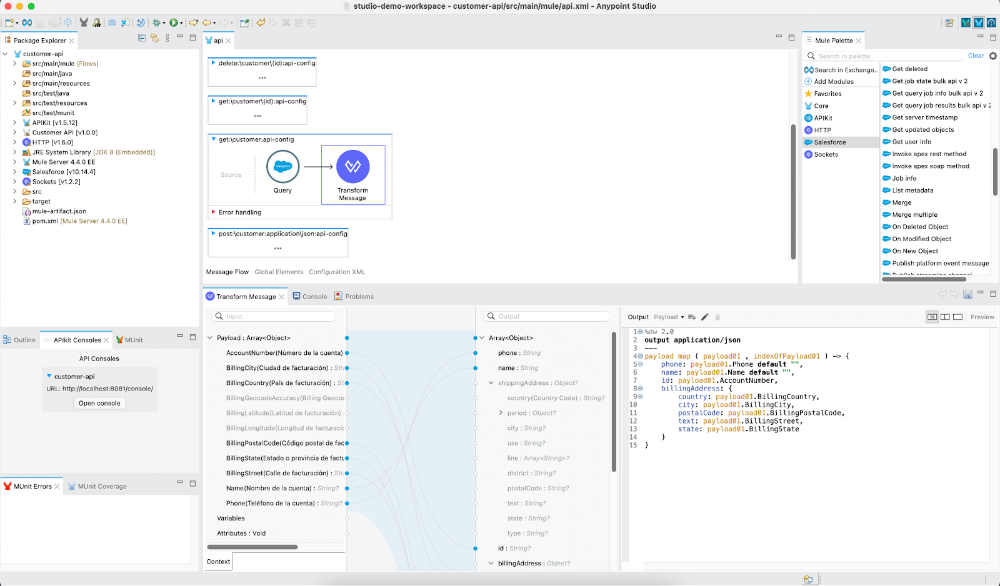
- Este es el código de mapeo que puede usar. Puede copiarlo y pegarlo en su editor de texto Dataweave y en la interfaz de usuario reflejará los cambios
%dw 2.0
output application/json
---
payload map ( payload01 , indexOfPayload01 ) -> {
phone: payload01.Phone default "",
name: payload01.Name default "",
id: payload01.AccountNumber,
billingAddress: {
country: payload01.BillingCountry,
city: payload01.BillingCity,
postalCode: payload01.BillingPostalCode,
text: payload01.BillingStreet,
state: payload01.BillingState
}
}
- Haga clic en Botón Guardar todo.
- Una vez implementada la aplicación, Anypoint Studio abrirá una pestaña con las Consolas APIkit donde podemos probar la aplicación (para acceder a la consola, simplemente haga clic en el enlace para abrir Customer API Console en un navegador).
- Haga clic en la pestaña GET pruebe la consulta de clientes.
- Presione el botón Send.
- La solicitud devolverá 200 OK, seguido de una lista de las cuentas.
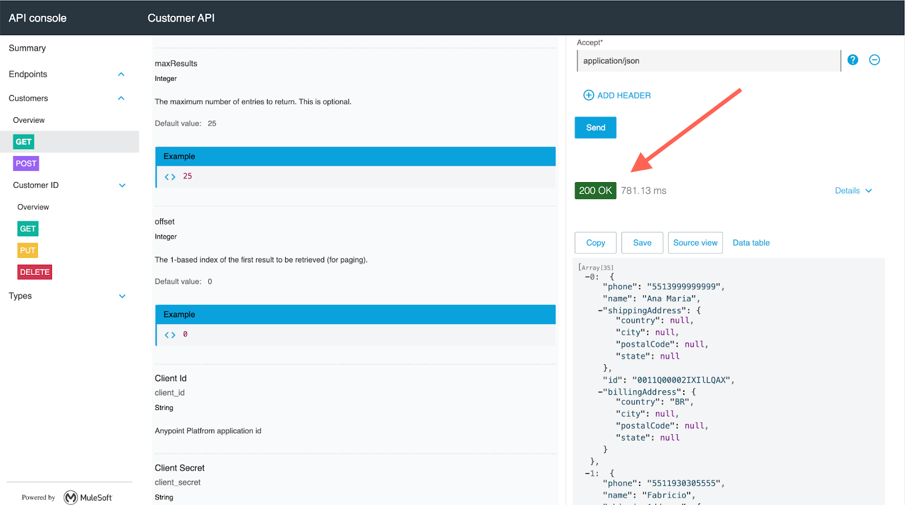
- ¡Felicitaciones, la aplicación se está ejecutando correctamente! En cuestión de minutos, se creó una integración con Salesforce utilizando una arquitectura API moderna.
Los pasos que deben ejecutarse son:
- Ahora, está listo para implementar la POST operación de recursos. Busque la publicación: \ customer: application \ json: api-config resource flow (en la parte inferior de la api vista de)
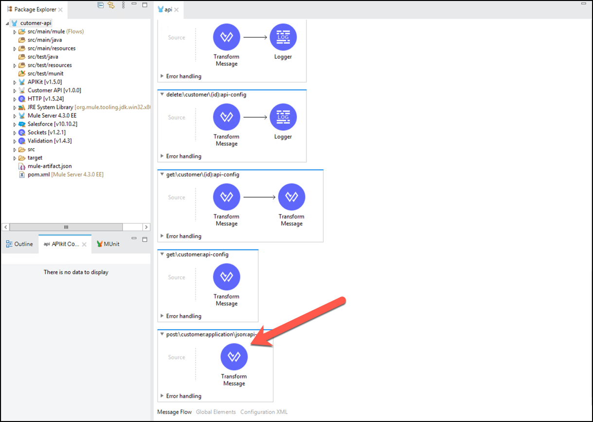 - Elimine elTransform Message devolvió la respuesta de muestra de la especificación de API
- Desde la paleta Mule, seleccione Salesforce, desplácese para crear y arrastrar y soltar el componente en el flujo.
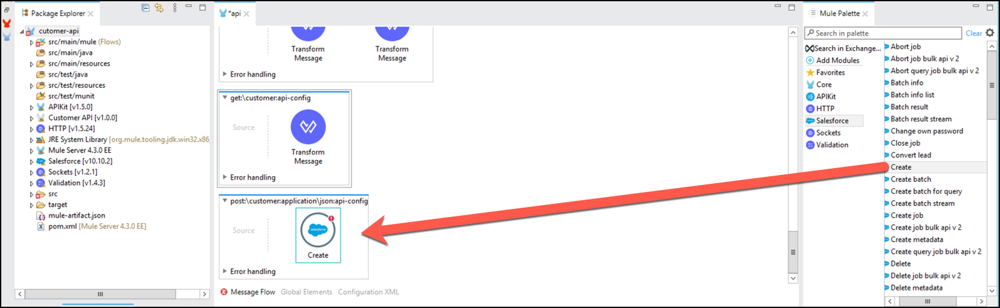 - Haga clic en el icono Salesforce y la configuración se mostrará a continuación.
- Cambie su nombre a
Crear cuenta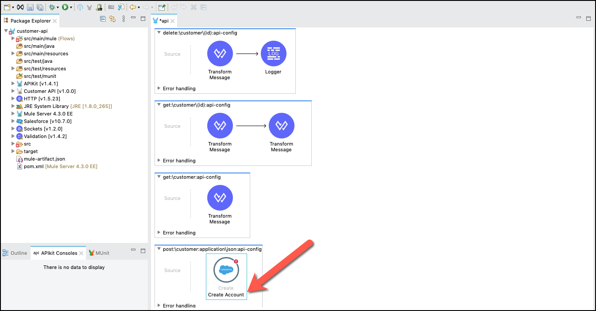 - Haga clic en el Botón Save All.
Es una buena práctica crear un archivo de configuración para contener todas las propiedades parametrizadas en el proyecto. Vamos a crear uno y configurar las credenciales de conexión para nuestra implementación de API. Primero, crearemos una carpeta y luego crearemos el archivo de configuración.
- Haga clic en src / main / resources en el Package Explorer vista del, haga clic con el botón derecho y cree una New → Folder con el nombre de configuración y haga Finalizar
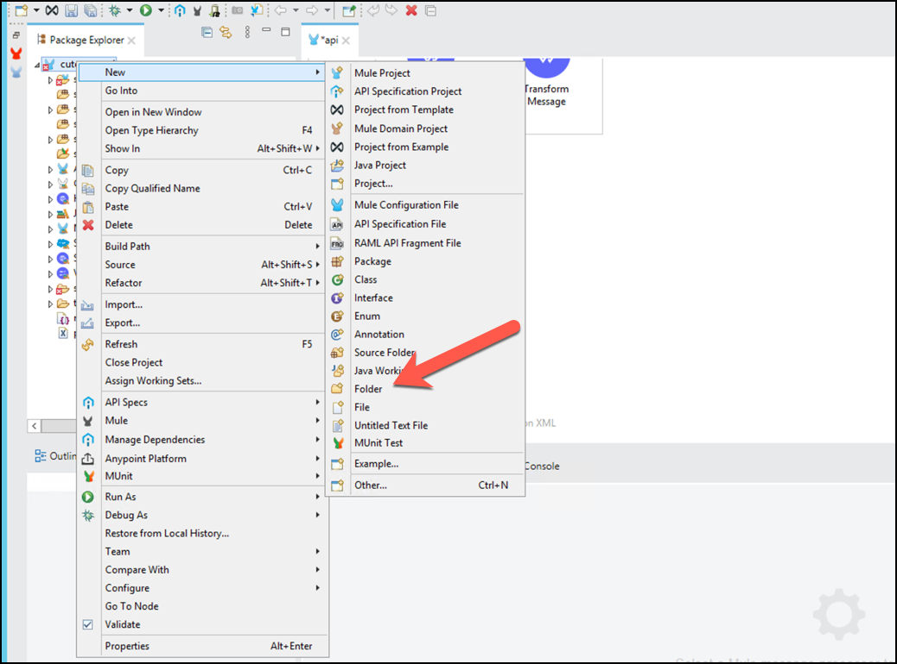 - cHaga clic en src / main / resources / configuration en el Package explorer, haga clic con el botón derecho y cree una New → File,nombre asígnele config.yml y haga clic en Finish.
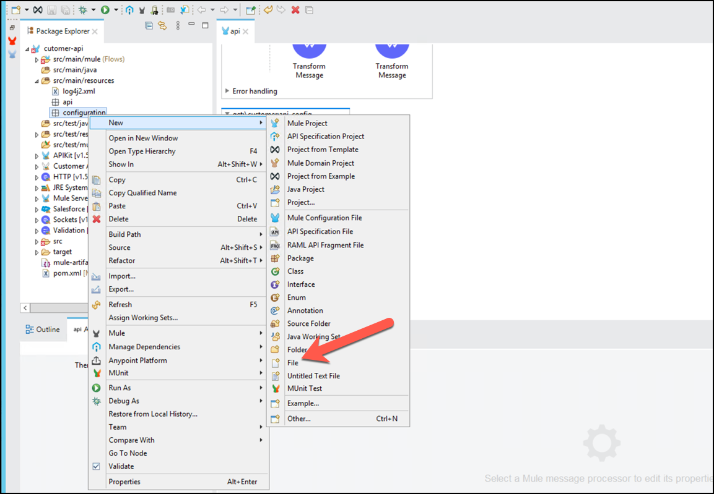
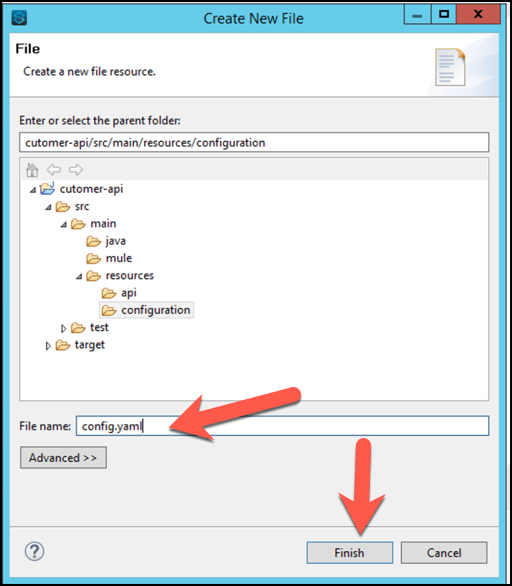
Copie el siguiente contenido en config.yaml. Estas son las credenciales de conexión que usará su API para el conector de Salesforce.
sfdc:
nombre de usuario: "demos+mythical_lab@mulesoft.com"
contraseña: "Elum1379"
securityToken: "7ZDtkYMazEtbvgdaaPrtMGit"
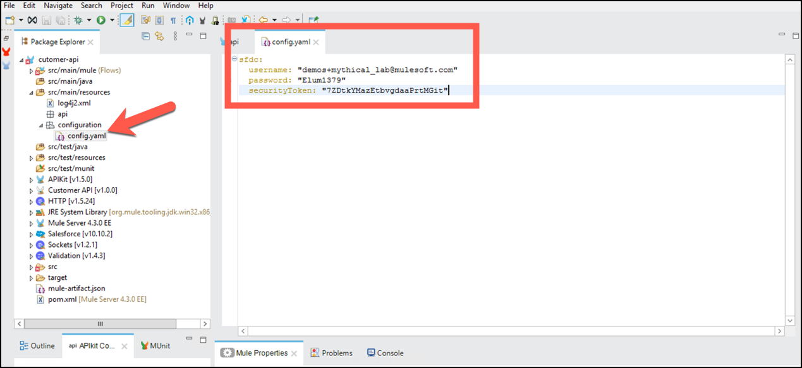
- Para finalizar la configuración del archivo de propiedades para su API, haga clic en la api vista y haga clic en la Global Elements pestaña.
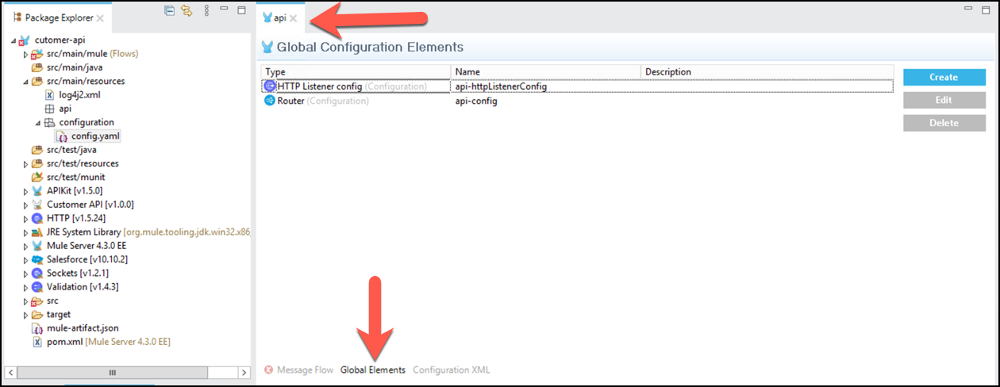 - Haga clic en Create, busque Properties, seleccione Configuration property haga clic Aceptar. introduzca config.yaml en el Archivo: atributo y haga en Accept.
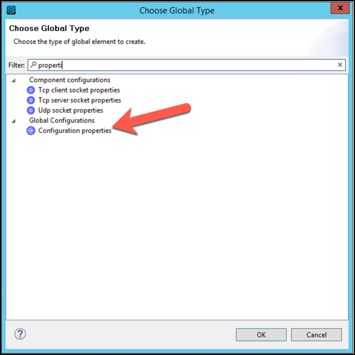
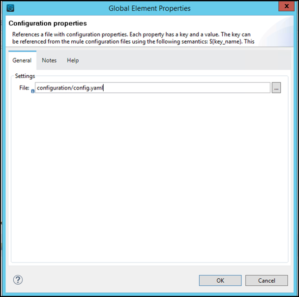 - Haga clic en el Save All Botón.
- Ahora que tiene sus propiedades definidas, creamos una nueva configuración de conector. Vuelva a al Message flow haciendo click donde soltó anteriormente el conector de Salesforce y selecciónelo.
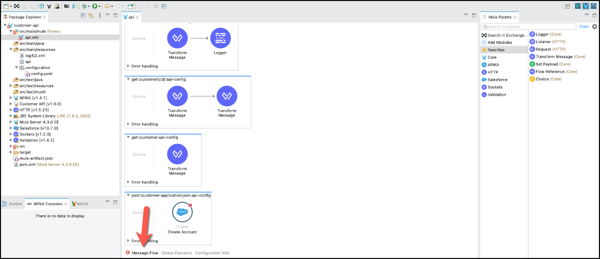 - Haga clic en el botón en la Configuración del conector.
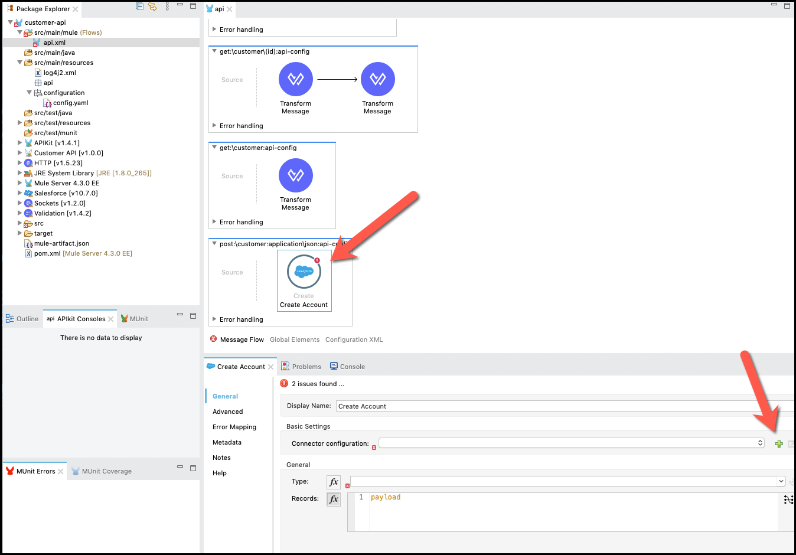 - Para la configuración del conector vamos a poner las siguientes propiedades:
- Nombre de usuario:
${sfdc.username} - contraseña:
${sfdc.password} - SecurityToken:
${sfdc.securityToken}
- Pulse Test connection para comprobar que todo está en su lugar.
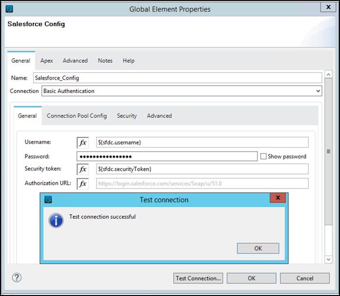 - Presione OK (2 veces).
- Haga clic en el Save All Botón.
Configuremos el conector de Salesforce para crear una cuenta. Continuamos en el Panel de Salesforce.
- Junto a la Tipo: propiedad haga clic en el botón Actualizar y luego seleccione Cuenta.
- Elimine la palabra payload dentro del campo de Record y presione Refresh Metadata.
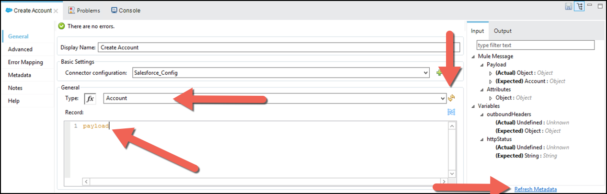
Ahora que hemos configurado el conector de Salesforce, necesitamos crear un mapeo que convertirá el mensaje JSON de la Solicitud al Objeto de Cuenta que se guardará en Salesforce. - Dentro del panel de conectores de Salesforce, en la sección Records, presione .
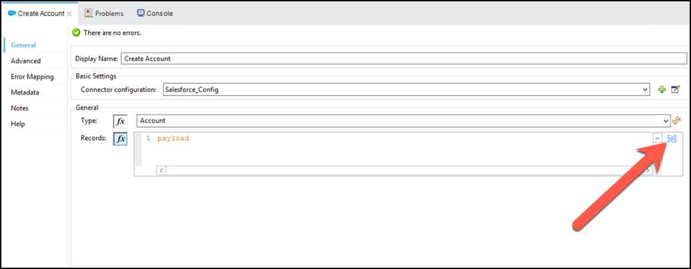
Verá una transformación de Dataweave, observe los paneles de entrada y salida. Puede arrastrar y soltar cada campo de la solicitud (entrada) al objeto de Salesforce (salida).
En este mapeo también usará una función, uuid (), para generar un único AccountNumber.
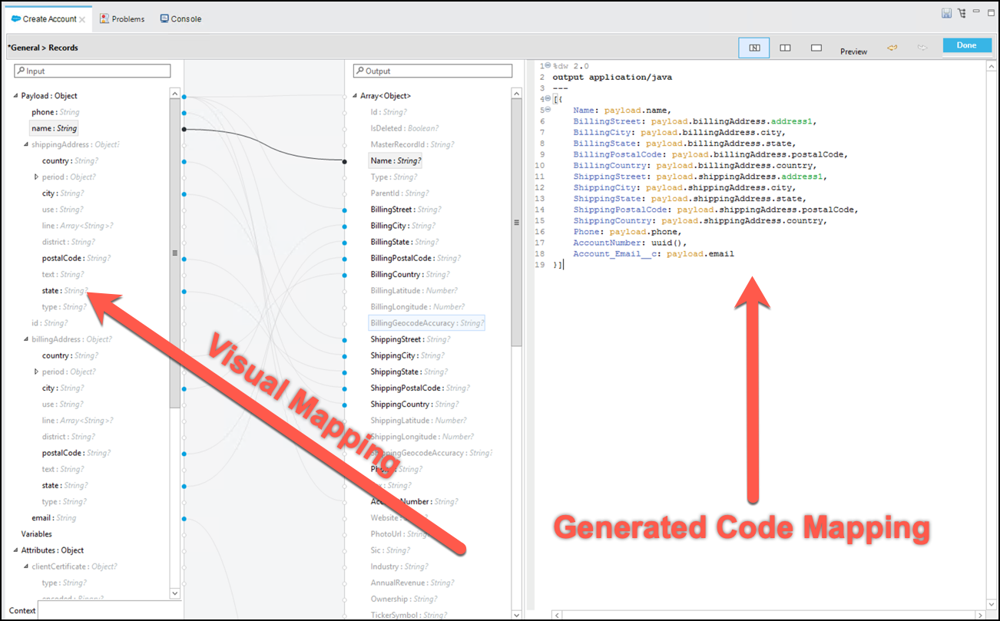
Este es el código de mapeo que refleja la imagen. Puede copiarlo y pegarlo en su editor de texto Dataweave y la interfaz de usuario reflejará los cambios de
output application/java
---
[{
Name: payload.name,
BillingStreet: payload.billingAddress.text,
BillingCity: payload.billingAddress.city,
BillingState: payload.billingAddress.state,
BillingPostalCode: payload.billingAddress.postalCode,
BillingCountry: payload.billingAddress.country,
ShippingCity: payload.shippingAddress.city,
ShippingState: payload.shippingAddress.state,
ShippingPostalCode: payload.shippingAddress.postalCode,
ShippingCountry: payload.shippingAddress.country,
Phone: payload.phone,
AccountNumber: uuid ( )
}]
Dataweave tiene muchas funciones útiles que se pueden explorar en Studio. Párese en el campo AccountNumber y presione F3 para ver todas las funciones que se pueden aplicar. Filtra por uuid y encontrarás información sobre la función. 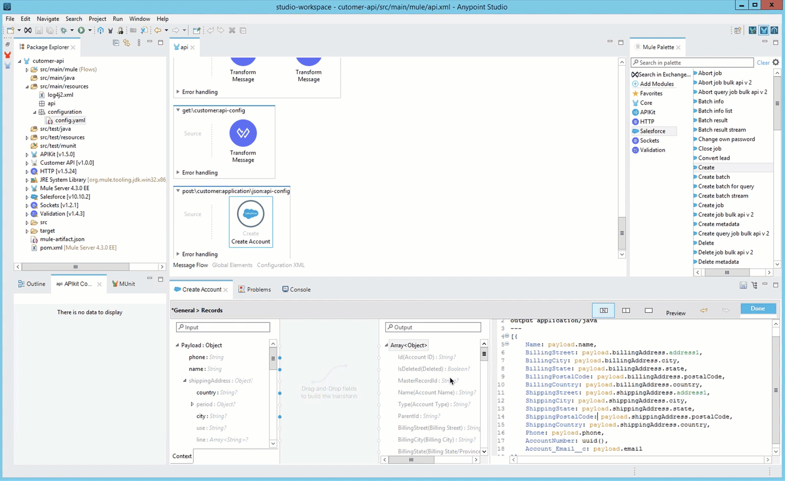 |
- Presione Done cuando termine el mapeo.
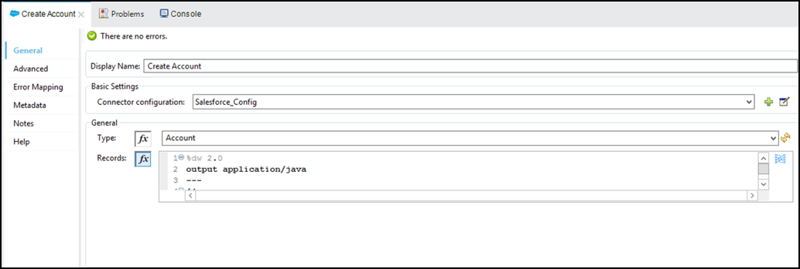 - Haga clic en el Guardar todo Botón.
- Ahora creará el paso de transformación que generará la respuesta del servicio. Para hacerlo, arrastre y suelte un Transform Message después del icono de Salesforce que se creó en el paso anterior.
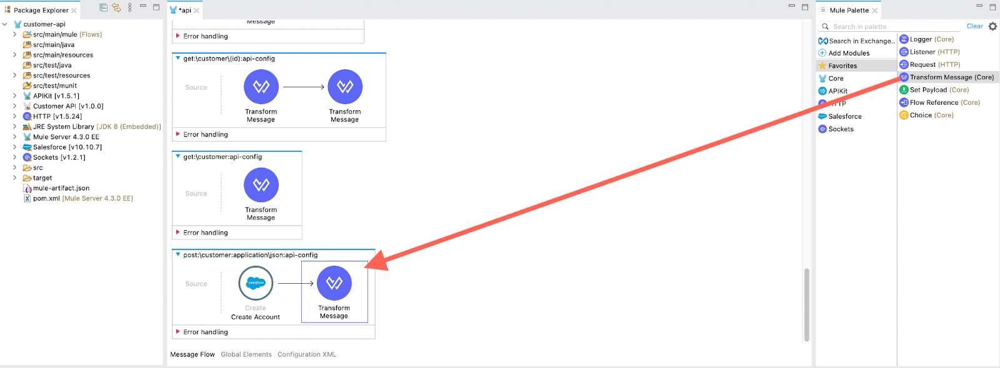 - Haga clic en el icono y veamos la transformación
. Verá la respuesta de SFDC y API Response.
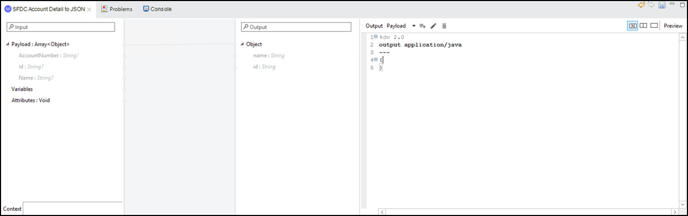 - Copie y pegue el siguiente script de tejido de datos:
% dw 2.0
output application/json
---
payload
- Haga clic en el Guardar todo Botón.
- Una vez implementada la aplicación, Anypoint Studio abrirá una pestaña con las Consolas APIkit donde podemos probar la aplicación (para acceder a la consola, simplemente haga clic en el enlace para abrir la consola de API Customer en un navegador).
- Haga clic en POST y pruebe la creación del cliente.
- En el campo Aceptar complete con
application/json - Haga clic en Cuerpo y luego modifique la información del texto. Cambie el nombre, la dirección, la información de contacto. Importante: dado que estamos en un entorno de laboratorio compartido, no use su dirección de correo electrónico o número de teléfono real en este paso.
- Presione el Send botón.
- Desplácese hacia abajo en el tercer panel y verá la respuesta de muestra devuelta por Salesforce.
Comencemos:
- Despliegue en Cloudhub. Haga clic con el botón derecho en el nombre del proyecto → Anypoint Platform → Deploy to cloudhub.
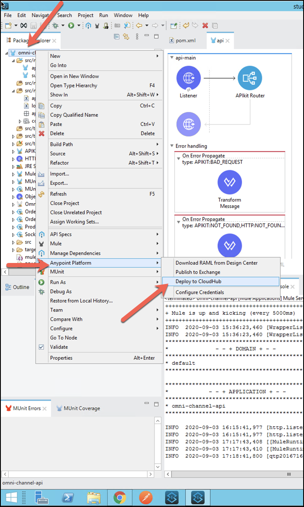 - Si es la primera vez que implementa de esta manera, un menú emergente le pedirá que proporcione sus credenciales de inicio de sesión para Anypoint Platform. Studio almacena sus credenciales y las usa automáticamente la próxima vez que implemente en CloudHub.
Puede administrar estas credenciales a través del menú Preferencias de Studio, en Anypoint Studio> Autenticación. |
Una vez que haya iniciado sesión en la plataforma Anypoint, es necesario seleccionar un Environment y un Business Group. Elija el Business Group al que tiene acceso y seleccione como entorno Sandbox.
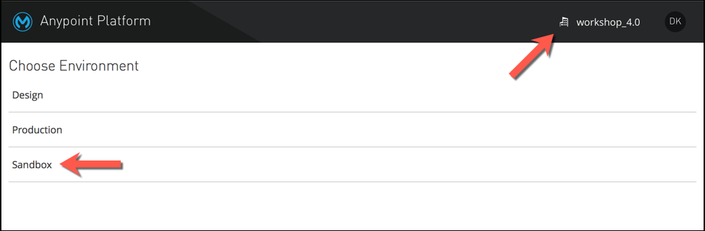- Ahora necesitamos especificar la aplicación para nuestra API.
- En el nombre de la aplicación, escriba <<MyName-omni-channel-api>>. Debería ver una marca verde si el nombre está disponible. De lo contrario, utilice otro nombre.
- Guarde este nombre, ya que lo utilizará más adelante. Un ejemplo sería donald-omni-channel-api
- En Runtime versión seleccione 4.4.0
Puede administrar estas credenciales a través del menú Preferencias de Studio, en Anypoint Studio> Autenticación. |
En Worker Size, seleccione 0.1 vCore y SANDBOX como entorno.
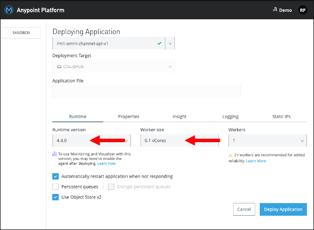
- Una vez realizada la configuración, haga clic en el Deploy application botón.
- Una vez que se completa la implementación (puede tardar unos minutos), puede navegar por la consola API en http: // <<username-omni-channel-api>>. <region> .cloudhub.io / console /.
La región puede cambiar según la plataforma en la que esté trabajando, EE. UU. O UE. |
En el ejemplo anterior sería algo así como http://donald-omni-channel-api.us-e2.cloudhub.io/console/.
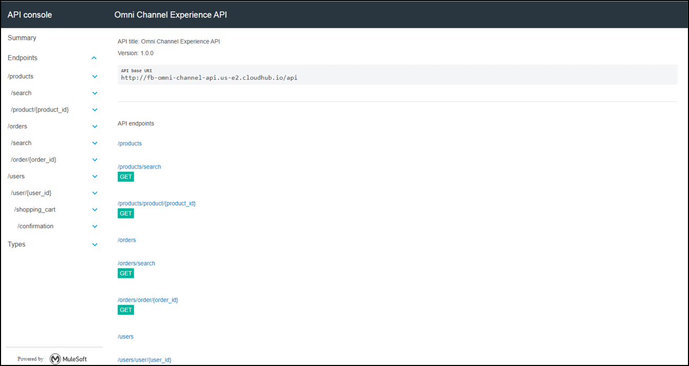
Ahora tiene completamente funcional la aplicación API Omni Channel .